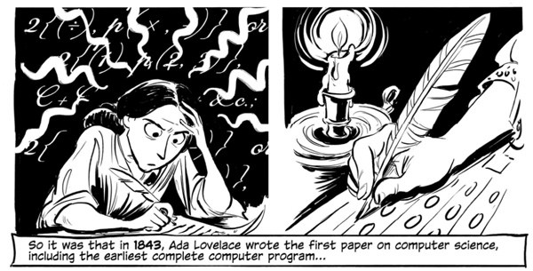

On June 5, 1833, a seventeen-year-old Lovelace met Charles Babbage at a party, where he was said to be entertaining the crowd with tales of his Difference Engine, a machine he'd designed to produce reliable, error-free math calculations.
Lovelace was impressed and wrote a letter to him asking for the blueprints so she could better understand it. In turn, Babbage was impressed by her and became her mentor, discussing math and computing. As MTV puts it "They were kind of like the Steve Wozniak and Steve Jobs of the mid-1800s." The Mirror reported that: She studied science and maths at a time when women rarely had access to such subjects, and collaborated with Babbage on his calculating machines. Lovelace could see the future of computing, and its potential to go beyond mere number-crunching. She identified the machines' potential to manipulate symbols rather than just numbers, foreshadowing modern computing a century in advance. In fact Lovelace was so ahead of her time that she formed a gambling syndicate with her male friends in 1851 and at tempted to create a mathematical model for successful large bets.
But that was not all, Lovelace was capable of. Besides her admirable skill in math, she also had her father's creative side and wrote extensively on the 'Nature of the Imagination and Its Three Core Faculties'.
In early January of 1841, two years before she applied her formidable imagination to writing the first paper on computer science and forever changing the course of technology, Lovelace considered the nature of the imagination and its three core faculties in a magnificent letter found in Ada, the Enchantress of Numbers: A Selection from the Letters of Lord Byron's Daughter and Her Description of the First Computer (public library) - the same volume that gave usLovelace on science and religion. Lovelace died at the young age of 36 in November 1852 from uterine cancer after several months of illness, but continues to be remembered as a popular figure.
A computer language 'Ada', created on behalf of the United States Department of Defence, was named after Lovelace. An annual event is also celebrated in mid-October every year called 'Ada Lovelace Day' which aims to raise the profile of women in science, technology, engineering and maths.